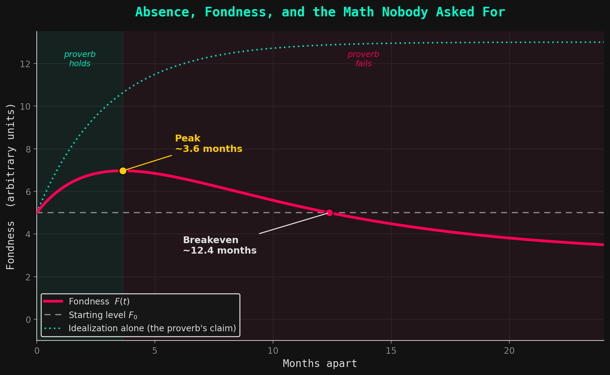

"Absence makes the heart grow fonder"
There's a version of this proverb everyone's lived through, even if they've never said it out loud. Someone leaves — for college, for a new job in another city, for a breakup that hasn't quite finished happening yet — and for a while, missing them feels like proof of something. Proof that it mattered. Proof that it wasn't just proximity keeping you together. You replay the good parts. You forget, conveniently, the way they left trash all over in your place
And then, at some point, without an obvious trigger, that feeling turns. You stop counting the days. The ache doesn't sharpen anymore, it just goes quiet. And eventually you realize you've been apart so long that "fondness" isn't really the word for what's left.
Nobody warns you about that second part. The proverb only ever gives you the first half.
So I want to actually work out why — not to be clever about it, but because I think the shape of this curve says something true about how attachment works ( I could claim this actually, personally being a victom of the situation ), and because the math turns out to be more honest than the aphorism.
Two things happening at once
When you're apart from someone, two separate processes start running in your head, and they pull in opposite directions.
The first is idealization. Without someone in front of you — without the small frictions of actually living around them — your memory quietly does some editing. It keeps the highlight reel and drops the footage of them being tired, or short with you, or just there in an unremarkable way. This is a well-documented tendency, sometimes called rosy retrospection, and it's not a flaw in your memory so much as a feature of how memory works when it isn't being corrected by daily contact. Every day apart, this glow gets a little stronger.
But it doesn't grow forever. There's only so much idealizing you can do. A month in, you've basically finished editing the highlight reel — there isn't a lot of new material for your imagination to work with. So this effect saturates. It rises quickly at first, then levels off.
The second is attachment decay, and this is the part the proverb conveniently ignores. Closeness isn't a thing you earn once and keep — it's maintained. It needs new shared moments, small updates, the texture of someone's current life, not just the memory of their old one. Without that upkeep, the bond doesn't stay frozen in place. It erodes. Slowly, and then not so slowly.
So you have idealization pulling fondness up, fast at first then flattening out — and decay pulling it down, slower to get going but relentless once it does. The proverb is really just a description of the first few weeks, when the first effect is winning. It says nothing about what happens once the second one catches up.
Writing it down
If you wanted to actually put numbers to this, you'd model fondness as a baseline plus the idealization gained minus the attachment lost, both of which saturate over time rather than growing without limit:
You don't need to sit with this equation — the shape it produces is the whole point, and you can see that shape without ever touching the formula. \(\tau_1\) is roughly "how fast you finish idealizing them" (short — idealization runs out of material quickly). \(\tau_2\) is "how fast the bond actually erodes without contact" (usually longer — attachment is stickier than nostalgia, at least at first). \(A\) and \(B_0\) are just how strong each effect is for this particular relationship.
Plot that, and you get a curve that rises, peaks, and then falls — past the peak, every additional day apart is actively working against you, not for you.

Where the proverb breaks, specifically
There are three moments in that curve worth naming, because each one is a different way the aphorism fails you if you take it literally.
The peak. This is the exact point where idealization and decay are moving at the same rate — where one more day apart stops helping and starts hurting. In a rough model of a few months apart, this can land as early as three or four months in. Past this point, the proverb isn't just incomplete, it's giving you the opposite of correct advice. "Just wait, you'll miss them more" stops being true here.
The breakeven. Keep going, and fondness eventually falls back down to wherever it started — the emotional equivalent of the relationship having never left home. Except now you've also lost the time. In the same rough model, this can land around a year in. A year of separation, and you're not "fonder." You're back to zero, minus the year.
Where it settles. If you wait long enough, both effects run their course, and fondness stops moving — it flattens out at some final level. If the decay was stronger than the idealizing ever was, that final level sits below where you started. Not a slow return to how things were. A quiet settling into something worse, permanently, if nothing else intervenes.
The actual point
The proverb isn't lying, exactly. It's just describing the very beginning of a curve and presenting it as the whole curve — the same trick a lot of comforting sayings pull. It's true for a while, in the specific window where idealization is outrunning decay, and it becomes false the moment that window closes, silently, with no announcement.
And it hides something important: how long that window stays open isn't fixed. It's not a universal property of missing someone. It depends entirely on \(\tau_1\) and \(\tau_2\) — which, stripped of the notation, just means how the relationship was actually built. A relationship sustained by real shared life, habits, inside jokes accumulated over years, decays slowly; the "distance makes it stronger" window can genuinely last a long while. A relationship that was mostly proximity — convenience more than substance — decays fast, and the warm feeling you get in week one is doing a lot of the emotional labor that the actual bond isn't.
Which might be the more useful — if less quotable — version of the proverb: absence doesn't make the heart grow fonder. Absence reveals how strong the heart already was. The math doesn't create the difference between those two relationships. It just makes visible what was always going to happen anyway.
 Let's run this as a logical sequence. Imagine a closed system—a room full of people, everyone starting with two eyes. Person A takes an eye from Person B. In retaliation, Person B takes an eye from Person A. Both now have one eye left. If this algorithmic loop continues, everyone eventually loses their first eye.
Let's run this as a logical sequence. Imagine a closed system—a room full of people, everyone starting with two eyes. Person A takes an eye from Person B. In retaliation, Person B takes an eye from Person A. Both now have one eye left. If this algorithmic loop continues, everyone eventually loses their first eye.
> Cache_Feedback